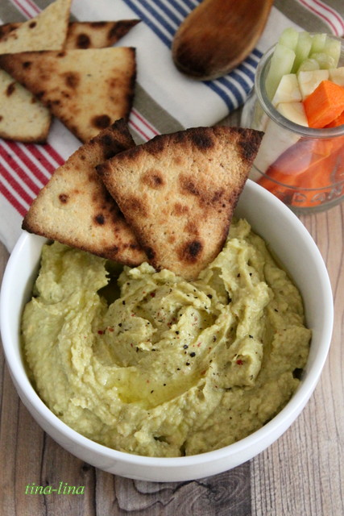
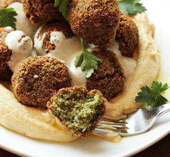
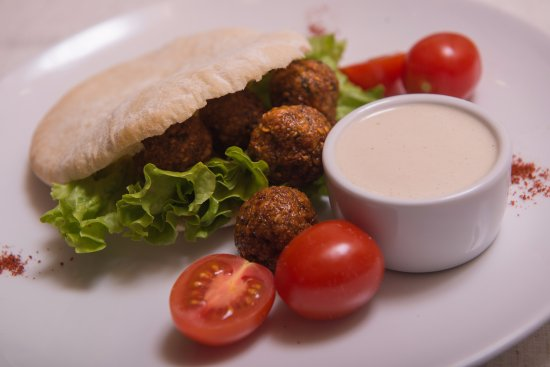

Минимальные сроки годности ввиду полного отсутствия искусственных консервантов.
Кошерный хумус только у нас!!
Хумус

Ингредиенты
- Каре ягненка — 800 г
- Лук шалот — 100 гр
- Грибы — 100 гр
- Йогурт натуральный — 500 гр
- Сахарный сироп — по вкусу
- Шафран — 5 гр
- Сок лимона — по вкусу
- Нут — 200 г
- Тхина (кунжутная паста) — 2 ст. л.
- Соль — по вкусу
- Сок лимона — 80 мл
- Масло оливковое — 200 мл
Хумус-всего за 50 грн.
Фалафель

Ингредиенты
- 1 стакан нута
- лаваш или пита
- растительное масло
- 1 белая луковица
- 1-2 зубчика чеснока
- 1 острый перец
- 1/2 ч. ложка зиры (кумина)
- 1 ч. л. куркумы
- 1 щепотка кардамона
- 1 пучок кинзы
- пита
- соль
Всего за 120 грн
Пита с фетой, помидорами и грибами

Ингредиенты
- лепешки пита - 2 шт.
- паста (из вяленых помидор) - 1 ст.л.
- лук репчатый (красный) - 1 шт.
- шампиньоны (свежие) - 5 шт.
- помидоры черри - по вкусу
- сыр фета - 1/2 стакана
- сыр пармезан (тертый) - 2 ст.л.
- оливковое масло - 3 ст.л.
- черный перец - по вкусу
Всего за 99 грн
Наши контакты: 055-991-91-91
Адрес:© 2015-2018 «Кафе "МЕСТЕЧКО", Кошер, Харьков»
Все права защищены ©